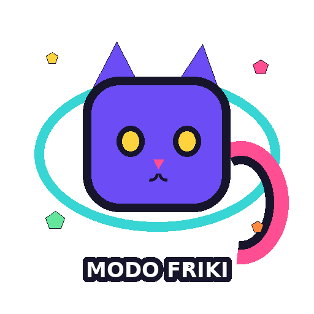

Tu próxima
aventura friki
empieza aquí.
Tiendas de culto, cafés lúdicos, museos, eventos y stickers originales para compartir.

¡MADRID TE ESPERA!Elige tu universo
Japan Weekend Madrid
Selección del gremio
Encuentra tu próxima misión.
Busca por afición, zona o nombre. Guarda favoritos y abre la ruta en Maps.
Nada por este cuadrante
Prueba a quitar algún filtro o buscar otra afición.
Fechas para subir de nivel.
Confirmados, anunciados y citas en radar. Transparencia antes que hype.
Rutas listas para jugar.
Itinerarios temáticos con paradas reales y enlace directo a Maps.
Mi ruta personalizada
Añade lugares desde sus fichas. Ordena las paradas y abre el recorrido.
Comparte el modo friki.
Diseños originales creados para esta app. Descarga PNG/WebP o comparte el GIF en WhatsApp.
Elige un diseño
→2Descarga o comparte
→3En WhatsApp, guárdalo como favorito
En móvil pulsa “Compartir” y elige WhatsApp. Para un sticker estático, descarga el WebP o PNG e impórtalo con la herramienta de creación de stickers de WhatsApp. Los GIF se envían como animación.
Favoritos guardados.
Se conservan en este dispositivo, incluso sin conexión.
Aún no hay tesoros
Pulsa el corazón de una tienda, sitio o evento para guardarlo.